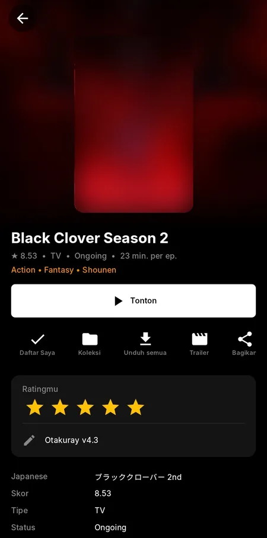
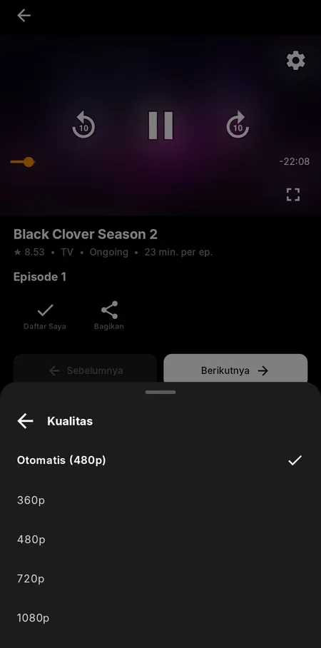
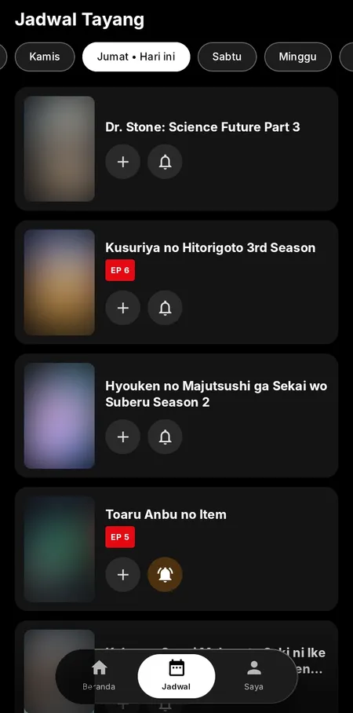
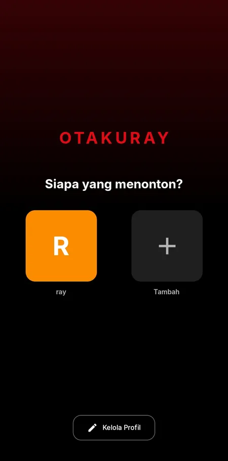

Tampilan
Sederhana, cepat, enak dilihat.
Lima layar yang paling sering kamu pakai.





Gambar poster pada tangkapan layar sengaja disamarkan. Hak cipta poster dan judul milik pemegang haknya masing-masing.